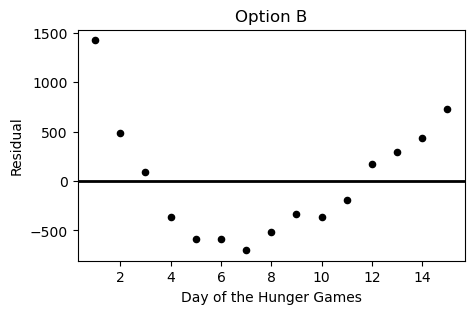

← return to practice.dsc10.com
Instructor(s): Janine Tiefenbruck
This exam was administered in-person. Students were allowed one page of double-sided handwritten notes. No calculators were allowed. Students had 3 hours to take this exam.
The Hunger Games is a young adult dystopian fictional novel. The events take place in the future in the fictional country of Panem, which consists of 12 impoverished districts and a wealthy metropolitan area called the Capitol.
The plot centers around an annual televised competition called the Hunger Games, in which children from the districts are forced to compete in a battle to the death. The participants, called tributes, are randomly selected via a lottery system.
The competition takes place in an arena that is specially designed for this purpose, and usually lasts several days or weeks, until only one tribute survives. The entire event is turned into a spectacle, which is broadcast throughout Panem as a way for the oppressive government to remind district residents of their powerlessness.
The main character and protagonist of The Hunger Games is Katniss Everdeen, a 16-year old girl from District 12 who competes in the 74th annual Hunger Games. After a life of poverty and near starvation, her experience in the Hunger Games arena further fuels her hatred of the government and lights a fire in her to fight back against the oppression.
Notes:
import babypandas as bpd, import numpy as np,
and import scipy.In an annual ceremony known as the reaping, tributes are selected to represent their district in the Hunger Games. One male and one female tribute from each district are randomly selected via a lottery drawing.
Every child between the ages of 12 and 18 (inclusive) has tickets entered into the drawing for their sex and district (e.g. girls from District 12). The number of tickets entered is dependent on age.
Starting at age 12, each child receives one ticket in the lottery. For each year after that, they receive one additional ticket, added to the total from the previous year. For example, 13-year-olds have two tickets, 14-year-olds have three tickets, and so on.
In this problem, we will consider only tickets corresponding to girls from District 12, and look at the distribution of these tickets according to the age of the person they represent. A density histogram for these tickets is shown below.
Which of the following statements about this distribution is correct?
The mean is less than the median.
The mean is the same as the median.
The mean is greater than the median.
It is impossible to determine the relationship between the mean and
Answer: The mean is less than the median
The histogram shows us that most of the tickets are for older girls i.e. girls that are of ages 17 to 19. It also shows us that there are fewer tickets for the younger girls. When most of the values are larger, the median is larger than the mean because the small values tend to pull the mean down.
The average score on this problem was 70%.
The histogram from the previous page is repeated below for your reference.
Suppose the rules of the Hunger Games were changed to eliminate 18-year-olds. If we plotted a new density
histogram of the distribution of ages for tickets corresponding to girls
from District 12 aged 12 to 17, how would the height of the
[13, 14) bar change?
Let h be the height of this bar in the original histogram. Give its height in the new histogram in terms of h.
Answer: 4/3 * h
The total area under a density histogram is 1. Using this bit of information, when the 18 year olds are removed we have to scale the the remaining bars so that the area of our density histogram is still 1. Notice the height of the exempt bar is 0.25 meaning that the remaining data is exactly 3/4 th of the original data. To rescale we need to divide the height h of each bar by 3/4 or multiply h by 4/3.
The average score on this problem was 40%.
What is the most common age among girls from District 12 aged 12 to 18? Remember, the distribution above is for all tickets, and older girls have more tickets.
12
13
14
15
16
17
18
Answer: 15
For this problem we need to calculate which bar has the most amount of girls within the bar keeping in mind that each age group gets a different amount of tickets. To do this we can calculate the proportion of girls in each bar relative to the total ticket distribution by dividing the height of each bar by the number of tickets allocated to that bar. The bar for age 15 comes out to the largest with a value of 0.045, and therefore that is our solution.
The average score on this problem was 75%.
As we saw in the last problem, children aged 12 to 18 (inclusive) have tickets entered into a drawing at the reaping. 12-year-olds have one ticket, 13-year-olds have two tickets, 14-year-olds have three tickets, and so on, gaining one ticket per year of age.
In this problem, we’ll look at the ages of all boys from District 3 and determine the probability that a boy of a certain age is selected in the drawing.
Suppose that there are only five boys from District 3 and their ages are as follows (in no particular order):
17, 12, 15, 14, 12.
Determine the probability that a 17-year-old is selected in the drawing.
Give your answer as an unsimplified fraction where the numerator is the number of tickets corresponding to a 17-year-old and the denominator is the total number of tickets.
Answer: 6/15
A short cut we can use to check how many tickets each kid gets is just taking their age and subtracting 11. If we do this for all of the listed kids given their ages, we get a total of 15 tickets. Furthermore, using our shortcut, the number of tickets allocated to the 17 year old would be 6. Thus, the unsimplified fraction is 6/15.
The average score on this problem was 88%.
Now, we’ll solve the problem more generally. Fill in the blanks below
to define a function pick_prob that takes as input an array
containing the ages of all boys in District 3, and a single age between 12 and 18
(inclusive). The function should return the probability of randomly
selecting a boy of that age during the reaping.
def pick_prob(ages, one_age):
age_tickets = __(a)__
total_tickets = __(b)__
return age_tickets / total_ticketsAnswer:
(a):
sum((ages == one_age) * (one_age - 11))
(b): (ages - 11).sum()
In part a we find how many tickets come from boys of the given age by taking the sum of all matches within the input and multiplied by the corresponding ticket value for that age.
In part b, to find the total number of tickets, we take all values in the input and calculate the corresponding number of tickets then add them all up.
The average score on this problem was 70%.
Using pick_prob, write one line of code that evaluates
to the probability that a 14-year-old
boy is not chosen during the reaping if the boys in
District 3 are aged 12, 14,
14, 15, 17, and
18.
Answer:
1 - pick_prob(np.array([12, 14, 14, 15, 17, 18]), 14)
To solve this problem we can simply take the complement of the
probability that we do select a 14-year-old boy during the reaping. With the
given ages of the boys in the problem statement, we can use the function
we defined above to calculate this. As a result, to arrive at our answer
we can simply take
1 - pick_prob(np.array([12, 14, 14, 15, 17, 18]), 14).
The average score on this problem was 88%.
So far, we have seen one way that children have tickets entered into the reaping: they receive one ticket when they are 12 years old, and then each year thereafter, an additional ticket is added onto the previous year’s total. This means 13-year-olds have two tickets, 14-year-olds have three tickets, and so on. We’ll call these tickets age tickets.
In this problem only, we’ll consider another way that a child may choose to enter tickets into the reaping in addition to the mandatory age tickets. If a child wishes, they can guarantee food rations for their family members, including themselves, at the price of one ticket per person. We’ll call these tickets food tickets. Like age tickets, food tickets are compounded each year, adding onto last year’s total.
As an example, let’s calculate the number of tickets that Katniss Everdeen has entered into the drawing at the reaping. Katniss is 16 years old, and every year, she has bought food for 3 family members (herself, her mother, and her sister Prim). This means:
At age 12, Katniss had one age ticket and three food tickets, making 4 tickets total.
At age 13, Katniss had one age ticket and three food tickets in addition to the 4 tickets from the year before, making 8 tickets total.
At age 14, Katniss again had one age ticket and three food tickets in addition to the 8 tickets from the year before, making 12 tickets total.
This pattern continues, and by the time Katniss is 16, she has 20 tickets.
In other words, Katniss had 4
tickets entered when she was 12 years,
and 4 more with each passing year. The
array np.arange(4, 24, 4) contains the number of tickets
Katniss entered each year, starting at age 12, up to and including her current age of
16 years old.
Fill in the blanks below to define the function
tix_array which takes in a child’s current age
between 12 and 18 (inclusive) and a number of family
members, k. The function returns an array similar Katniss’s
array above, representing the number of tickets they entered into the
reaping each year since they were 12
years old, assuming that they buy food for their whole family every
year.
Tip: tix_array(16, 3) should be the
same as the array np.arange(4, 24, 4).
def tix_array(age, k):
return np.arange(__(a)__, __(b)__, __(c)__)Answer:
(a): k + 1
(b): (ages - 10) * (k + 1)
(c): k + 1
At age 12 each kid gets 1 ticket for their age and k
food tickets; therefore, the starting value of our list must be must be
at k + 1 because that’s how many tickets they get when they
first enter. Next, we want the list to go up to the kid’s current age.
This means we can stop at (age - 10) * (k + 1) to cover all
of the years beginning from age 12 all the way till their current age.
Finally, each year the ki adds the same number of tickets one for their
increase in age and another k for food. Thus, the step is
k + 1.
The average score on this problem was 52%.
The DataFrame reaping contains information on the
children of District 12 between the ages of 12 and 18.
For each child, we have their "name", "age",
"family_size" which includes themselves, and a boolean
variable "buying_food". A value of True means
the child always buys food for their entire family, and
False means the child never buys food for anyone. The first
few rows of reaping are shown below, but there are many
more rows than pictured.

Fill in the blanks in the code below to add a new column,
"tickets", to reaping that contains the number
of tickets that the child will have entered into the drawing in the
current year.
Hint: In Python, True is treated as
1 and False is treated as
0 when doing arithmetic!
tickets_per_year = __(d)__ * __(e)__ + 1
current_tickets = tickets_per_year * (__(f)__)
reaping = reaping.assign(tickets = current_tickets)Answer:
(d): reaping.get("buying_food")
(e): reaping.get("family_size")
(f): reaping.get("age") - 11
We use the "buying_food" column to extract whether a
child chose to get extra food rations. This value consists of
bool values, and because of the way booleans are encoded in
python we can use this column as part of the math.
We use "family_size" because the child needs one food
ticket per each one of their family members. Multiplying it by
"buying_food" column from the previous part gives the
correct number of food tickets per year which is either the full family
size (if they are buying food) or 0 (if they are not buying food).
Finally we can use our shortcut to calculate the number of years a
child has been entering tickets, our shortcut being subtracting the age
of each child found in the "age" column by 11.
The average score on this problem was 61%.
For this subpart, assume that the tix_array function was
defined correctly in part (a), and that
the "tickets" column was added correctly to the
reaping DataFrame in part (b). Fill in the blanks in the code below so
that the following expression evaluates to True.
reaping.get("tickets").iloc[7] == tix_array(__(g)__, __(h)__)[-1]Answer:
(g): reaping.get("age").iloc[7]
(h): reaping.get("family_size").iloc[7]
The left side of the equation looks to access the number of tickets associated with the 8th child. To check this using the tix_array function we need to use the current age of the 8th child and the family size of the 8th child as inputs. We can get these values by extracting them from their respective columns.
The average score on this problem was 85%.
After being selected at the reaping, tributes are transported to the Capitol to prepare for the Hunger Games. While they are there, they attend a training camp to practice skills that might be helpful in the arena. At the training camp, there are 8 different stations such as camouflage, knife throwing, archery, plant identification, etc. At each of the 8 stations, tributes are scored on their skills from 1 to 10.
These 8 scores are combined into an overall score as follows:
Count the number of stations at which the tribute scored more than 5, demonstrating basic proficiency.
Count the number of stations at which the tribute scored more than 8, demonstrating expertise.
Add these counts together, capping the overall score at 12. This means that if the sum is larger than 12, the tribute earns the maximum possible score of 12.
Overall scores therefore range from 0 to 12. Which of the following functions takes as input an array containing a tribute’s 8 scores from the stations and correctly outputs their overall score? Select all that apply.
Hint: In Python, True + True evaluates
to 2.
def function1(stations):
overall = 0
for score in stations:
if score > 5:
overall = overall + 1
if score > 8:
overall = overall + 1
if overall >= 12:
return 12
return overalldef function2(stations):
overall = 0
for score in stations:
if score > 5:
overall = overall + 1
elif score > 8:
overall = overall + 2
return min(overall, 12)def function3(stations):
overall = 0
for i in np.arange(8):
if stations[i] > 8:
overall = overall + 2
elif stations[i] > 5:
overall = overall + 1
return min(overall, 12)def function4(stations):
overall = 0
for score in stations:
add = score > 5
add = (score > 8) + add
overall = overall + add
return min(overall, 12)def function5(stations):
return min(12, np.count_nonzero(stations > 5) + np.count_nonzero(stations > 8))Answer: Function 1, 3, 4, 5
The best way to go about this problem is individually check each function for correctness.
Function 1 correctly checks for scores > 5 and adds 1 for each valid instance. It then checks again if the same score is > 8 and adds another 1 to the total count. Finally there is a cap set to 12 to use if needed.
Function 2 uses the elif conditional so if score > 5,
it skips the score > 8 check. This means that scores > 8 only get
the plus 1 rather than the plus 2. Thus, this function is incorrect.
Function 3 iterates through all stations if the score > 8 it adds
2 otherwise (using elif), if the score is > 5, adds 1.
This is capped at 12 using the min function. Thus, this is a correct
implementation.
Function 4 is correct because it adds 1 point if the score is greater than 5 and then adds 1 more point if its also greater than 8. This is exactly what we are looking for in the problem statement.
Function 5 provides an elegant one-liner for the same problem using the count_nonzero function to count the number of scores greater than 5 and then adding that the to scores greater than 8. Together this does the same thing as adding 1 for each score between 5 and 8, and adding 2 for scores greater than 8.
The average score on this problem was 75%.
The night before the Hunger Games begins, each tribute is interviewed in front of a live audience. During this interview, the host asks each tribute a few personal questions and reveals their overall score from the training camp. These interviews are broadcast across the country, so that the residents of Panem can get to know the tributes better and form opinions about who they want to win.
The Capitol wants to understand public perceptions of the tributes after the interviews for the 74th Hunger Games. They conduct a survey of a sample of residents from all 12 districts, asking them two questions:
“What district do you live in?"
“Who do you think will win this year’s Hunger Games?"
The survey results are in the DataFrame survey, with
columns "District" and "Tribute" which contain
each person’s answers to the two questions above. The first few rows of
survey are shown below.

In this problem, we will try to estimate the proportion of residents from a given district who think a certain tribute will win the Hunger Games.
What proportion of residents in District 11 think Peeta will win?
Write one line of code that evaluates to this
proportion in our sample, based on the data in
survey.
Answer:
survey[(survey.get("Tribute") == "Peeta") & (survey.get("District") == 11)].shape[0] / survey[survey.get("District") == 11].shape[0]
This question is just a whole lot of querying. For the numerator we want all the people who answered the survey who are from district 11 and votes for Peeta. We can do this by querying on those two conditions and taking the shape. For the denominator we want all the people from district 11 who answered the survey, so we query for that in the denominator and take the shape.
The average score on this problem was 78%.
Next, we want to create a 95% confidence interval for the proportion
of all residents from a given district who think a
certain tribute will win. Fill in the blanks in the function
win_CI below. This function takes the name of a tribute and
the number of a district and returns the endpoints of a 95% bootstrapped
confidence interval for the proportion of all residents of that district
who think that tribute will win, based on the data in
survey.
For example win_ci("Peeta", 11) returns the endpoints of
a 95% confidence interval for the proportion of all residents from
District 11 who think Peeta will win.
def win_ci(tribute, district):
only_district = survey[survey.get("District") == district]
props = np.array([])
for i in np.arange(10000):
resample = __(a)__
tribute_count = __(b)__
boot_prop = tribute_count / __(c)__
props = np.append(props, boot_prop)
return [np.percentile(props, 2.5), np.percentile(props, 97.5)](a):
only_district.sample(only_district.shape[0], replace=True)
For the first blank we have to create a bootstrapped sample from just
the rows in the given district. We sample with replacement here as we do
when we bootstrap to keep the same number of rows. That being said we
use the .sample function with replacement to get our sample
from the only_district dataframe containing the rows in the
given district. Within our sample we want the number of rows to be the
same size as the only_district dataframe. so we set the
size argument to be only_district.shape[0].
(b):
resample[resample.get("Tribute") == tribute].shape[0]
Now we want to find how many times the given tribute appears in the
bootstrapped sample. To do that we query the dataframe for the given
tribute and the take the size of our query using
.shape[0].
(c): resample.shape[0]
The denominator of our resample is just the total number of people in
the resample. That being said to fill this blank all we need to do is
use .shape[0] to take the size of the resample.
The average score on this problem was 59%.
Suppose we were to plot a histogram of props within the
function win_CI. Which of the following best describes this
histogram?
The histogram reflects the shape of the population.
The histogram reflects the shape of the data in
survey.
The histogram reflects the shape of the data in survey
which corresponds to the given district.
The histogram is roughly normal because of the Central Limit Theorem (CLT).
The histogram is roughly normal, but not because of the CLT.
Answer: The histogram is roughly normal because of the Central Limit Theorem (CLT).
The props histogram shows the ditribution of proportions from a bunch of random resamples. Per the CLT, the distribution of sample stats like proportions will be basically normal, regardless of the shape of the original dataset.
The average score on this problem was 53%.
Suppose we now compute the following:
win_ci("Katniss", 4)
[0.25, 0.72]
win_ci("Katniss", 12)
[0.50, 0.70]
Which of the following reasons best explains why the second interval is narrower than the first?
More people live in District 12 than District 4.
More people live in District 4 than District 12.
A greater fraction of District 12 residents than District 4 residents think Katniss will win.
A greater fraction of District 4 residents than District 12 residents think Katniss will win.
There are more survey participants from District 12 than District 4.
There are more survey participants from District 4 than District 12.
Answer: There are more survey participants from District 12 than District 4.
Confidence intervals get narrower when there is an increase in sample size. This is because the variation present in the bootstrapped estimates is smaller. Therefore, we can say there were more survey participants from District 12 than District 4.
The average score on this problem was 68%.
Suppose we want to redo our survey so that our confidence interval for the proportion of District 12 residents who think Katniss will win has a width of at most 0.10. We will assume that our new sample’s standard deviation will be the same as our original sample’s standard deviation. Which of the following best describes how to achieve this?
Our new sample should have twice as many people from District 12. It doesn’t matter how many people the sample contains overall.
Our new sample should have four times as many people from District 12. It doesn’t matter how many people the sample contains overall.
Our new sample should have twice as many people overall. It doesn’t matter how many of them are from District 12.
Our new sample should have four times as many people overall. It doesn’t matter how many of them are from District 12.
Answer: Our new sample should have four times as many people overall. It doesn’t matter how many of them are from District 12.
The width of our confidence interval is determined by the standard error which decreases at the factor of \frac{1}{\sqrt(n)} to half the width, we need the denominator to increase by a factor of 2. Therefore, we need 4x more data, as the square root of 4 is 2.
The average score on this problem was 75%.
Residents of Panem not participating in the Hunger Games can sponsor tributes to help them survive. Sponsors purchase supplies and have them delivered to tributes in the arena via parachute. Haymitch is the mentor for the tributes from District 12, Katniss and Peeta. Part of his job is to recruit sponsors to buy necessary supplies for Katniss and Peeta while they are in the arena.
In his advertising to potential sponsors, Haymitch claims that in 100 randomly selected parachutes delivered to tributes in past Hunger Games, the supplies were distributed into categories as follows:
Haymitch’s Distribution
| Category | Medical | Food | Weapons | Shelter | Other | Total |
|---|---|---|---|---|---|---|
| Count | 40 | 30 | 10 | 15 | 5 | 100 |
Data scientists at the Capitol know that across all past Hunger Games, there have been 2000 parachute deliveries of supplies to tributes. Further, they have recorded the following count of how many of these parachutes’ supplies fell into each category:
The Capitol’s Distribution
| Category | Medical | Food | Weapons | Shelter | Other | Total |
|---|---|---|---|---|---|---|
| Count | 700 | 500 | 300 | 300 | 200 | 2000 |
In this problem, we will assess whether Haymitch is making an accurate claim by determining whether his sample of 100 parachutes looks like a random sample from the Capitol’s distribution.
Which of the following are appropriate test statistics for this hypothesis test? Select all that apply.
The mean difference in proportions between Haymitch’s distribution and the Capitol’s distribution.
The maximum absolute difference in proportions between Haymitch’s distribution and the Capitol’s distribution.
The average absolute difference in proportions between Haymitch’ distribution and the Capitol’s distribution.
The sum of squared differences in proportions between Haymitch’s distribution and the Capitol’s distribution.
The correlation coefficient between Haymitch’s proportion and the Capitol’s proportion, for each category.
None of the above.
Answer: Choices 2,3,4
The underlying question we are asking in this problem is are the two distributions the same. That being said, it means that directionality does not matter. This eliminates any answer choice that takes solely the difference without accounting for the lack of directionality. As a result, we eliminate choices 1 and 5. Choice 1 takes a simple difference and Choice 5 calculates a correlation coefficient which does not apply when looking at whether two distributions are the same. We are left with choices 2,3,4. All of these choices account for the lack of directionality required by our question, but contain slight differences in the choice of summary statistic used.
The average score on this problem was 70%.
The distributions from the previous page are repeated below for your reference.
Haymitch’s Distribution
| Category | Medical | Food | Weapons | Shelter | Other | Total |
|---|---|---|---|---|---|---|
| Count | 40 | 30 | 10 | 15 | 5 | 100 |
The Capitol’s Distribution
| Category | Medical | Food | Weapons | Shelter | Other | Total |
|---|---|---|---|---|---|---|
| Count | 700 | 500 | 300 | 300 | 200 | 2000 |
Suppose we decide to use total variation distance (TVD) as the test statistic for this hypothesis test. Calculate the TVD between Haymitch’s distribution and the Capitol’s distribution. Give your answer as an exact decimal.
Answer: 0.1
To find the TVD here, we first have turn each set of counts into proportions by dividing by their totals. Then for each one fo the categories we have to find the absolute difference between Haymitch’s proportion and the Capitol’s proportion. When we add these differences and divide by 2 we get 0.1. This is our TVD, and it cane be interpretted as there being a 10% difference between the two distributions
The average score on this problem was 72%.
Suppose you run a simulation to generate 1000 TVDs between the Capitol’s distribution and samples of size 100 randomly drawn from that distribution. You determine that the TVD you calculated in part (b) is in the 96th percentile of your simulated TVDs. Which of the following correctly interprets this result? Select all that apply.
About 96% of simulated TVDs are less than the one you calculated in part (b).
Haymitch’s distribution is 96% more accurate than the Capitol’s distribution.
There is a 96% probability that Haymitch’s sample was a random sample from the Capitol’s distribution.
If Haymitch’s sample were a random sample from the Capitol’s distribution, getting a TVD greater than or equal to the one you calculated in part (b) would happen about 4% of the time.
If Haymitch’s sample were a random sample from the Capitol’s distribution, getting a TVD greater than or equal to the one you calculated in part (b) would happen about 96% of the time.
None of the above.
Answer: Choice 1 & Choice 4
Choice 1 is correct because being in the 96th percentile essentially means that about 96% of the TVDs we simulted are smaller than the one we observed.
Choice 2 is incorrect because when we calculate the percentile, it doesn’t measure accuracy, it instead is a simple measure of how our TVD compares to the simulated ones.
Choice 3 is also incorrect because the percentile we calculate here is no the same as the probability the null hypothesis is true.
Choice 4 is a correct choice because if Haymitch’s sample really came from the Capitol’s distribution, only about 4% of those random samples would have a TVD that is either equal to the one we found or larger.
Choice 5 is the last answer choice and is also incorrect because it reverses the definition of the percentile. This choice would be correct had it said 4% not 96%.
The average score on this problem was 90%.
During the Hunger Games, sponsors may purchase supplies for the tributes competing. However, supplies increase in price as the Hunger Games progress. Haymitch collects data on the price, in dollars, of purchasing bread for a tribute over the first 15 days of the Hunger Games competition. He uses linear regression to predict the price of bread based on the day of the competition. His regression line is shown below on a scatterplot of the data.

Which of the following plots is the residual plot for the data above?




Option A
Option B
Option C
Option D
Answer: Choice C
This choice is correct because the curve in the original scatter plot has a steeper slope at beginning and end, but is actually below the regression line in the middle. This creates positive residuals at the beginning/end and negative residuals in the middle. This eliminates choices A & D. Between choices B & C, we want the negative region of the residual plot ot fall between the fifth and thirteenth days of the hungers games. Only choice C satisfies this.
The average score on this problem was 94%.
What conclusions can Haymitch draw from looking at the residual plot of his regression line? Select all that apply.
The correlation coefficient between these variables is weak (r<0.5).
A line is not the best choice to model the relationship between these variables.
There is a different line that fits the data better than this line.
None of the above.
Answer: Choice 2
The only one of the choices here we can really say for sure is true is Choice B and that is because there is a curved pattern in our residual plot telling us that our straight regression line is missing a trend in the data that a nonlinear model would likely capture. This line of reasoning immidiately also eliminates Choice C, as the curved trend exhibited in the residuals means that no straight line will fit the data better than a nonlinear model. Finally the first choice is also incorrect, because regardless of the trend shown on the residual plot we could still have a strong correlation coefficient.
The average score on this problem was 75%.
Haymitch wants to present the scatter plot to potential sponsors, but he wants to give the prices in thousands of dollars instead of dollars. He divides each of the 15 prices in his data set by 1000, then recalculates the regression line. Which of the following statements are correct? Select all that apply.
The mean of the prices will be divided by 1000.
The standard deviation of the prices will be divided by 1000.
The slope of the regression line predicting price from day will be divided by 1000.
The intercept of the regression line predicting price from day will be divided by 1000.
The slope of the regression line predicting price in standard units from day in standard units will be divided by 1000.
The root mean square error (RMSE) of the regression line will be divided by 1000.
None of the above.
Answer: Choices 1, 2, 3, 4, 6
Choices 1-4 & 6 are correct because when we divide the y variable by 1000, then all of the y variable based quantities will be also scaled down by 1000. This means the mean, std, slope, intercept, and RMSE will all also be scaled down.
Choice 5 is not correct because under standard units, the slope is equal to the correlation coefficient which is resilient to how we scale the units on the graph.
The average score on this problem was 66%.
[(13 pts)]
In certain districts (1, 2, and 4), children spend years training for the Hunger Games and frequently volunteer to participate in them. Tributes that come from these districts are known as Career tributes. Many residents of Panem believe that Career tributes generally fare better in the Hunger Games because of their extensive training.
We’ll test this claim using historical data. The DataFrame
survival has a row for each tribute who participated in one
of the first 74 Hunger Games. The
columns are as follows:
"Tribute": The name of the tribute.
"District": Their home district (1–12).
"Days": The number of days they stayed alive in the
arena.
"Game": The Hunger Games edition they competed in
(1–74).
A few rows of survival are shown below:
We’ll use this data to test the following pair of hypotheses:
Null Hypothesis: On average, Career tributes and
non-Career tributes survive an equal amount of time in the arena.
Alternative Hypothesis: On average, Career tributes survive longer in the arena than non-Career tributes.
Our test statistic will be the mean survival time of Career tributes minus the mean survival time of non-Career tributes
Write code to create a DataFrame called tributes that
has all the data in survival plus an additional column
called "Career". This column should contain boolean values
indicating whether each tribute is considered a Career tribute. Feel
free to define intermediate variables and functions as needed, and to do
this in multiple lines of code.
Answer:
def is_career(d):
if d==1 or d==2 or d==4:
return True
else:
return False
tributes = survival.assign(Career=survival.get('District').apply(is_career))A quick explaination here would be saying that inorder to have a new column where we can decipher if a given tribute is a career tribute or not, we need a function that tells us if a tribute is a career tribute based on the district they are located in. To do this, all we need to do is check for any given tribute if they are in districts 1, 2, or 4 using our function, meaning we need to build our function and then apply it to the district series. We can then just assign the output series back to the original dataframe.
The average score on this problem was 65%.
Fill in the blanks in the code below so that statistics
evaluates to an array with 10000 simulated values of the test statistic
under the null hypothesis.
statistics = np.array([])
for i in np.arange(10000):
shuffled = tributes.assign(__(a)__)
means = shuffled.groupby("Career").mean().get("Days")
stat = __(b)__
statistics = np.append(statistics, stat)Answer:
(a): np.random.permutation(tributes.get("Days))
(b): means.loc[True] - means.loc[False]
In blank a we shuffle one of the columns so as to break any real link
between the Career column and the Days column. This allows us to
simulate our null hypothesis. After this in blank b, we use
means.loc[True] - means.loc[False] to get the difference in
mean survival days between career and non-career tributes. This is our
test statistic.
The average score on this problem was 63%.
The output of tributes.groupby("Career").mean() is shown
below.

Fill in the blank below to compute the p-value of this test.
p_value = (__(a)__).mean()Answer:
(a): statistics >= 0.6
Our observed statistic can be calculated by taking the difference in
means from the Days column. In this case that is 5.2 - 4.6 = 0.6. We want all of the simulated
values that are at least as extreme as this observed value. Therefore we
want all values from the statistics array >= 0.6.
The average score on this problem was 63%.
Before getting selected for the Hunger Games, Katniss often spent her days hunting with her friend Gale. Hunting is illegal in Panem, so Katniss and Gale sold their poached game at a black market known as The Hob, always splitting the profits equally, even if one person’s kills were worth more than the other’s.
Suppose Katniss and Gale hunted together three times. The values of
each person’s kills are recorded in katniss_sample and
gale_sample, respectively. Their individual profits are
recorded in average_sample. Calculate the mean and variance
of each of these three samples. Give all of your answers as
integers.
| Sample | Mean | Variance |
|---|---|---|
a.) katniss_sample = [47, 44, 50] |
||
b.) gale_sample = [25, 28, 28] |
||
c.) average_sample = [36, 36, 39] |
Answer:
a.) mean: \frac{47+44+50}{3} = \frac{141}{3} = 47; variance: \frac{(47−47)^2+(44−47)^2+(50−47)^2}{3} =
\frac{(0 + 9 + 9)}{3} = 6
b.) mean: \frac{(25+28+28)}{3} = \frac{81}{3} = 27; variance = \frac{(25−27)^2+(28−27)^2+(28−27)^2}{3} =
\frac{(4 + 1 + 1)}{3} = 2
c.) mean: \frac{(36+36+39)}{3} = \frac{111}{3} = 37; variance: \frac{[(36−37)^2+(36−37)^2+(39−37)^2]}{3} =
\frac{(1 + 1 + 4)}{3} = 2
The average score on this problem was 16%.
Suppose that the value of Katniss’s kills are normally distributed with mean \$50 and SD \$3, and the value of Gale’s kills are independently normally distributed with mean \$30 and SD \$2.
On one hunting trip, Katniss’s kills are worth twice as much as Gale’s, but the value of her kills in standard units is the same as the value of Gale’s kills in standard units. Determine the value of Gale’s kills on this hunting trip. Give your answer as an integer.
Answer: 10
If Katniss’s kills (K) are worth twice Gale’s kills (G) we can say that K = 2G. To get the standardized values of each of their kills we can use the formula:
\frac{\text{Kills on Trip} - \text{Mean Kills for Person}}{\text{Std Kills for Person}}
(This is just the regular standardization formula put in the context of this problem).
Furthermore, we know that their standardized values are equal from the problem statement, so after subtituting values in we get the below equality:
\frac{2G - 50}{3} = \frac{G - 30}{2}
Using some basic cross multiplication we can attempt to solve for G now.
4G - 100 = 3G - 90; G = 10
The average score on this problem was 85%.
Now, suppose that we no longer know whether the distribution of the value of Katniss’s kills is normal. All we know about this distribution is that it has mean \$50 and SD \$3.
Which of the following statements are true? Select all that apply.
It is possible that Katniss’s kills are never valued between \$48 and \$52.
No more than 75\% of Katniss’s kills are between \$44 and \$56 in value.
scipy.stats.norm.cdf(50) gives an approximation for the
fraction of Katniss’s kills that are below \$50 in value.
None of these.
Answer: Choice 1 only
Choice 1 could be correct assuming our distribution is not normal, as there could be some sorta two point distribution that has no area under $47 to $53 meaning that Katniss’s kills are never valued in that range.
Choice 2 is False the range given in this choice encompasses 2 standard deviations. Per Chebyshev if we are 2 stds from the mean, at least 75% of the data must lie in our range, meaning there could be more than 75% of the data in this range.
Choice 3 is False aswell because the norm cdf required the assumption of normality.
Choice 4 is incorrect because the first statement is true.
The average score on this problem was 76%.